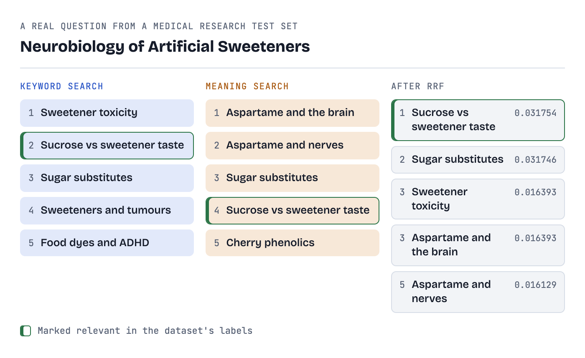
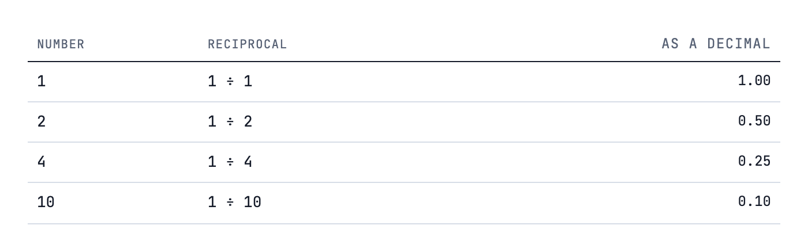
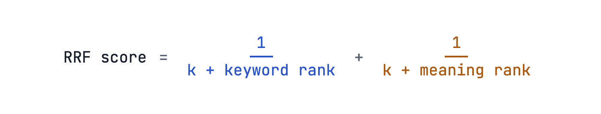
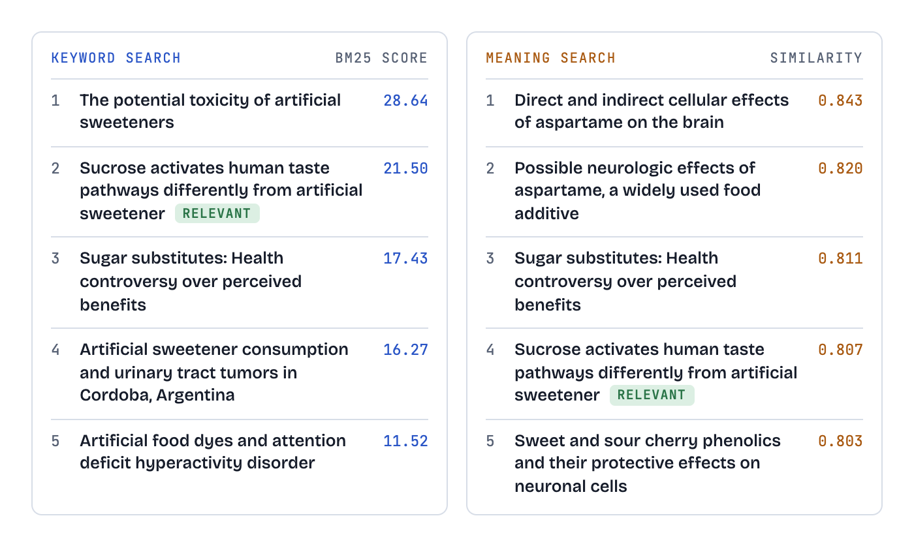
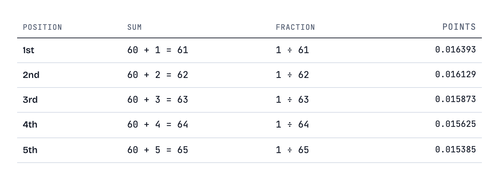
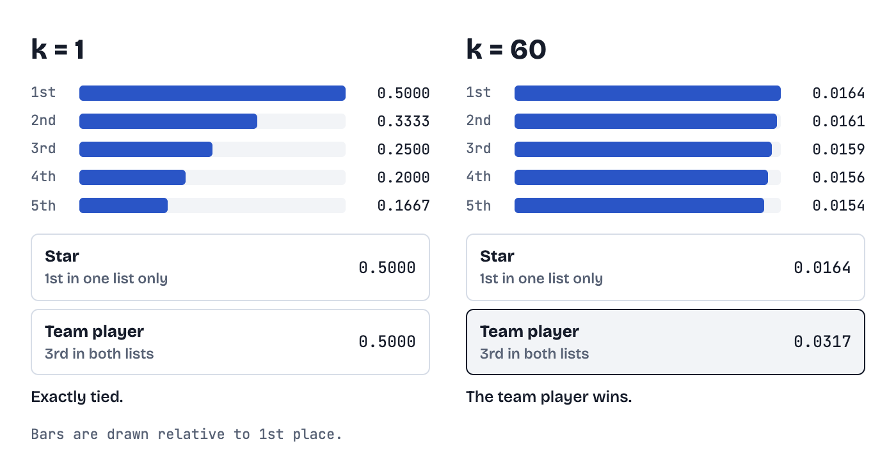
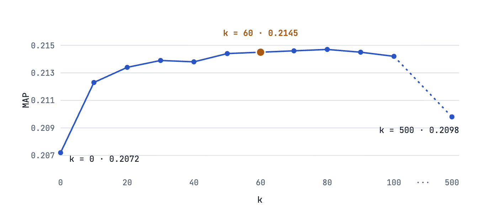
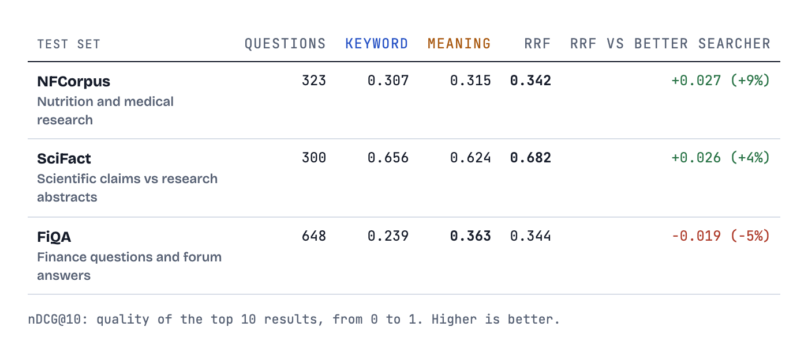
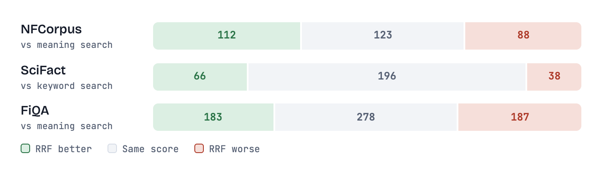
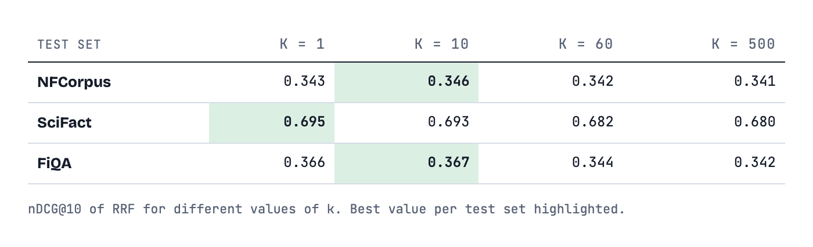

<meta charset="utf-8">
<meta name="viewport" content="width=device-width, initial-scale=1, viewport-fit=cover">
<title>Reciprocal Rank Fusion, Without the Scary Math</title>
<link rel="preconnect" href="https://fonts.googleapis.com">
<link rel="preconnect" href="https://fonts.gstatic.com" crossorigin>
<link rel="stylesheet" href="https://fonts.googleapis.com/css2?family=IBM+Plex+Mono:ital,wght@0,400;0,500;0,600;1,400&family=Space+Grotesk:wght@500;600;700&display=swap">
<style>
/* ape-present base stylesheet. Copy verbatim into <style>, then add
   per-document rules beneath it. Every colour in the document must be one
   of these tokens; grep for '#' outside the :root blocks and expect zero hits.

   The document is a long-form reading page, not a deck: one prose column,
   real headings, figures inline. Theme follows the OS or present-md; `t` flips it.
   Width has a comfortable measure constraint (--measure) with visual elements
   allowed to break out beyond it (--wide, --max-width). Layout is centered by
   default; data-layout="left" on <html> switches the whole document to a
   left-margin layout so breakouts extend rightward instead of symmetrically. */

/* ---- Theme: midnight (dark) -------------------------------- */
:root[data-theme="midnight"],
:root[data-theme="dark"],
:root[data-theme="mocha"] {
  --crust:            #11111b;
  --mantle:           #181825;
  --base:             #1e1e2e;
  --surface0:         #313244;
  --surface1:         #45475a;
  --surface2:         #585b70;
  --overlay0:         #6c7086;
  --overlay1:         #7f849c;
  --subtext0:         #a6adc8;
  --subtext1:         #bac2de;
  --text:             #cdd6f4;
  --lavender:         #b4befe;
  --blue:             #89b4fa;
  --sapphire:         #74c7ec;
  --sky:              #89dceb;
  --teal:             #94e2d5;
  --green:            #a6e3a1;
  --yellow:           #f9e2af;
  --peach:            #fab387;
  --red:              #f38ba8;
  --mauve:            #cba6f7;
  --pink:             #f5c2e7;
  --accent:           #cba6f7;
  --accent-2:         #89b4fa;
  --accent-3:         #89dceb;
  --accent-soft:      color-mix(in srgb, var(--accent) 10%, transparent);
  --accent-line:      color-mix(in srgb, var(--accent) 42%, transparent);
  --glow:             color-mix(in srgb, var(--accent) 34%, transparent);
  --gradient:         linear-gradient(115deg, #cba6f7, #89b4fa 58%, #89dceb);
  --accent-fade:      linear-gradient(90deg, #cba6f7, rgba(203, 166, 247, 0.45) 62%, transparent);
  --surface-soft:     rgba(49, 50, 68, 0.34);
  --crust-overlay:    rgba(17, 17, 27, 0.84);
  --scrim:            rgba(0, 0, 0, 0.5);
  --hairline:         rgba(205, 214, 244, 0.09);
  --shadow-md:        0 8px 28px rgba(0, 0, 0, 0.42);
  --shadow-lg:        0 24px 68px rgba(0, 0, 0, 0.52);
  --code-shadow:      0 6px 26px rgba(0, 0, 0, 0.4);
  --font-display:     'Space Grotesk', system-ui, -apple-system, 'Segoe UI', Helvetica, Arial, sans-serif;
  --font-body:        'Inter', system-ui, -apple-system, 'Segoe UI', Helvetica, Arial, sans-serif;
  --font-mono:        'IBM Plex Mono', ui-monospace, SFMono-Regular, Menlo, Consolas, monospace;
  --display-weight:   700;
  --display-tracking: -0.025em;
  --display-case:     none;
  --body-tracking:    0;
  --decor-line:       rgba(205, 214, 244, 0.05);
  --decor-dot:        rgba(205, 214, 244, 0.085);
  --decor-glow-1:     rgba(203, 166, 247, 0.2);
  --decor-glow-2:     rgba(137, 180, 250, 0.16);
  --decor-glow-3:     rgba(137, 220, 235, 0.13);
  --bg:               #1e1e2e;
  --surface:          #181825;
  --line:             #313244;
  --muted:            #a6adc8;
  --grid:             rgba(205, 214, 244, 0.06);
  --err:              #f38ba8;
  --ok:               #a6e3a1;
  --code-k:           #cba6f7;
  --code-s:           #a6e3a1;
  --code-c:           #6c7086;
  --code-n:           #89b4fa;
  --serif:            'Space Grotesk', system-ui, -apple-system, 'Segoe UI', Helvetica, Arial, sans-serif;
  --mono:             'IBM Plex Mono', ui-monospace, SFMono-Regular, Menlo, Consolas, monospace;
  --sans:             'Inter', system-ui, -apple-system, 'Segoe UI', Helvetica, Arial, sans-serif;
  --ease:             cubic-bezier(0.22, 1, 0.36, 1);
  --measure:          44rem;
  --wide:             64rem;
  --max-width:        72rem;
  color-scheme: dark;
}

/* ---- Theme: daylight (light) -------------------------------- */
:root, :root[data-theme="daylight"],
:root[data-theme="light"],
:root[data-theme="latte"] {
  --crust:            #ebebeb;
  --mantle:           #f5f5f5;
  --base:             #fafaf8;
  --surface0:         #ccd0da;
  --surface1:         #9ca0b0;
  --surface2:         #8c8fa1;
  --overlay0:         #6c6f85;
  --overlay1:         #5c5f77;
  --subtext0:         #4c4f69;
  --subtext1:         #3a3c52;
  --text:             #1e2030;
  --lavender:         #7287fd;
  --blue:             #1e66f5;
  --sapphire:         #209fb5;
  --sky:              #04a5e5;
  --teal:             #179299;
  --green:            #40a02b;
  --yellow:           #df8e1d;
  --peach:            #fe640b;
  --red:              #d20f39;
  --mauve:            #8839ef;
  --pink:             #ea76cb;
  --accent:           #8839ef;
  --accent-2:         #1e66f5;
  --accent-3:         #179299;
  --accent-soft:      color-mix(in srgb, var(--accent) 9%, transparent);
  --accent-line:      color-mix(in srgb, var(--accent) 34%, transparent);
  --glow:             color-mix(in srgb, var(--accent) 22%, transparent);
  --gradient:         linear-gradient(115deg, #8839ef, #1e66f5 58%, #179299);
  --accent-fade:      linear-gradient(90deg, #8839ef, rgba(136, 57, 239, 0.45) 62%, transparent);
  --surface-soft:     rgba(204, 208, 218, 0.42);
  --crust-overlay:    rgba(235, 235, 235, 0.88);
  --scrim:            rgba(30, 32, 48, 0.26);
  --hairline:         rgba(30, 32, 48, 0.11);
  --shadow-md:        0 8px 28px rgba(30, 32, 48, 0.17639999999999997);
  --shadow-lg:        0 24px 68px rgba(30, 32, 48, 0.2184);
  --code-shadow:      0 6px 26px rgba(30, 32, 48, 0.168);
  --font-display:     'Space Grotesk', system-ui, -apple-system, 'Segoe UI', Helvetica, Arial, sans-serif;
  --font-body:        'Inter', system-ui, -apple-system, 'Segoe UI', Helvetica, Arial, sans-serif;
  --font-mono:        'IBM Plex Mono', ui-monospace, SFMono-Regular, Menlo, Consolas, monospace;
  --display-weight:   700;
  --display-tracking: -0.025em;
  --display-case:     none;
  --body-tracking:    0;
  --decor-line:       rgba(30, 32, 48, 0.07);
  --decor-dot:        rgba(30, 32, 48, 0.1);
  --decor-glow-1:     rgba(136, 57, 239, 0.15);
  --decor-glow-2:     rgba(30, 102, 245, 0.12);
  --decor-glow-3:     rgba(23, 146, 153, 0.1);
  --bg:               #fafaf8;
  --surface:          #f5f5f5;
  --line:             #ccd0da;
  --muted:            #4c4f69;
  --grid:             rgba(30, 32, 48, 0.08);
  --err:              #d20f39;
  --ok:               #40a02b;
  --code-k:           #8839ef;
  --code-s:           #40a02b;
  --code-c:           #6c6f85;
  --code-n:           #1e66f5;
  --serif:            'Space Grotesk', system-ui, -apple-system, 'Segoe UI', Helvetica, Arial, sans-serif;
  --mono:             'IBM Plex Mono', ui-monospace, SFMono-Regular, Menlo, Consolas, monospace;
  --sans:             'Inter', system-ui, -apple-system, 'Segoe UI', Helvetica, Arial, sans-serif;
  --ease:             cubic-bezier(0.22, 1, 0.36, 1);
  --measure:          44rem;
  --wide:             64rem;
  --max-width:        72rem;
  color-scheme: light;
}

@media (prefers-color-scheme: dark) {
  :root:not([data-theme]) {
  --crust:            #11111b;
  --mantle:           #181825;
  --base:             #1e1e2e;
  --surface0:         #313244;
  --surface1:         #45475a;
  --surface2:         #585b70;
  --overlay0:         #6c7086;
  --overlay1:         #7f849c;
  --subtext0:         #a6adc8;
  --subtext1:         #bac2de;
  --text:             #cdd6f4;
  --lavender:         #b4befe;
  --blue:             #89b4fa;
  --sapphire:         #74c7ec;
  --sky:              #89dceb;
  --teal:             #94e2d5;
  --green:            #a6e3a1;
  --yellow:           #f9e2af;
  --peach:            #fab387;
  --red:              #f38ba8;
  --mauve:            #cba6f7;
  --pink:             #f5c2e7;
  --accent:           #cba6f7;
  --accent-2:         #89b4fa;
  --accent-3:         #89dceb;
  --accent-soft:      color-mix(in srgb, var(--accent) 10%, transparent);
  --accent-line:      color-mix(in srgb, var(--accent) 42%, transparent);
  --glow:             color-mix(in srgb, var(--accent) 34%, transparent);
  --gradient:         linear-gradient(115deg, #cba6f7, #89b4fa 58%, #89dceb);
  --accent-fade:      linear-gradient(90deg, #cba6f7, rgba(203, 166, 247, 0.45) 62%, transparent);
  --surface-soft:     rgba(49, 50, 68, 0.34);
  --crust-overlay:    rgba(17, 17, 27, 0.84);
  --scrim:            rgba(0, 0, 0, 0.5);
  --hairline:         rgba(205, 214, 244, 0.09);
  --shadow-md:        0 8px 28px rgba(0, 0, 0, 0.42);
  --shadow-lg:        0 24px 68px rgba(0, 0, 0, 0.52);
  --code-shadow:      0 6px 26px rgba(0, 0, 0, 0.4);
  --font-display:     'Space Grotesk', system-ui, -apple-system, 'Segoe UI', Helvetica, Arial, sans-serif;
  --font-body:        'Inter', system-ui, -apple-system, 'Segoe UI', Helvetica, Arial, sans-serif;
  --font-mono:        'IBM Plex Mono', ui-monospace, SFMono-Regular, Menlo, Consolas, monospace;
  --display-weight:   700;
  --display-tracking: -0.025em;
  --display-case:     none;
  --body-tracking:    0;
  --decor-line:       rgba(205, 214, 244, 0.05);
  --decor-dot:        rgba(205, 214, 244, 0.085);
  --decor-glow-1:     rgba(203, 166, 247, 0.2);
  --decor-glow-2:     rgba(137, 180, 250, 0.16);
  --decor-glow-3:     rgba(137, 220, 235, 0.13);
  --bg:               #1e1e2e;
  --surface:          #181825;
  --line:             #313244;
  --muted:            #a6adc8;
  --grid:             rgba(205, 214, 244, 0.06);
  --err:              #f38ba8;
  --ok:               #a6e3a1;
  --code-k:           #cba6f7;
  --code-s:           #a6e3a1;
  --code-c:           #6c7086;
  --code-n:           #89b4fa;
  --serif:            'Space Grotesk', system-ui, -apple-system, 'Segoe UI', Helvetica, Arial, sans-serif;
  --mono:             'IBM Plex Mono', ui-monospace, SFMono-Regular, Menlo, Consolas, monospace;
  --sans:             'Inter', system-ui, -apple-system, 'Segoe UI', Helvetica, Arial, sans-serif;
  --ease:             cubic-bezier(0.22, 1, 0.36, 1);
  --measure:          44rem;
  --wide:             64rem;
  --max-width:        72rem;
    color-scheme: dark;
  }
}

/* ---- Reset + page ----------------------------------------------------------- */
*, *::before, *::after { box-sizing: border-box; }
html { scroll-behavior: smooth; }
body {
  margin: 0;
  background: var(--bg);
  /* Permanent graph-paper ground: 32px squares in faint accent. Ties the diagrams' grid to the page. */
  background-image: linear-gradient(to right, var(--grid) 1px, transparent 1px), linear-gradient(to bottom, var(--grid) 1px, transparent 1px);
  background-size: 32px 32px;
  color: var(--text);
  font: 1rem/1.7 var(--mono);
  -webkit-font-smoothing: antialiased;
  overflow-x: hidden;
}
a { color: var(--accent); text-decoration: underline; text-decoration-color: color-mix(in srgb, var(--accent) 40%, transparent); text-underline-offset: 0.15em; }
a:hover { text-decoration-color: var(--accent); }
svg { display: block; max-width: 100%; height: auto; }
svg text { font-family: var(--mono); fill: var(--text); }
code, pre, .num { font-family: var(--mono); }
p code, li code, td code { font-size: 0.95em; background: var(--surface); border: 1px solid var(--line); border-radius: 4px; padding: 0.05em 0.35em; }

/* ---- Document column & width limits ------------------------------------------ */
.doc { max-width: var(--measure); margin: 0 auto; padding: clamp(2rem, 5vw, 4rem) clamp(1.25rem, 4vw, 2.5rem) 6rem; }
.doc > *, .doc section > * { min-width: 0; max-width: 100%; overflow-wrap: anywhere; }

/* Visual elements breakout: permitted to go beyond the prose column up to --wide or --max-width */
figure.wide, .wide, .breakout {
  width: min(var(--wide), 100vw - 2.5rem);
  max-width: none;
  margin-left: 50%;
  transform: translate(-50%, 12px);
}
.full-bleed {
  width: min(var(--max-width), 100vw - 2.5rem);
  max-width: none;
  margin-left: 50%;
  transform: translate(-50%, 12px);
}

/* Layout mode: data-layout="left" on <html> shifts the whole document off a left
   margin instead of true center, freeing the right side for breakouts throughout
   the doc. Default (no attribute) keeps the centered column above. Figures then
   anchor to that same left edge and grow rightward instead of centering on the
   viewport. Collapses back to the default full-width column below the mobile
   breakpoint (see Responsive). */
:root[data-layout="left"] { --doc-left-margin: clamp(2rem, 8vw, 6rem); }
:root[data-layout="left"] .doc { margin: 0 0 0 var(--doc-left-margin); }
:root[data-layout="left"] figure.wide,
:root[data-layout="left"] .wide,
:root[data-layout="left"] .breakout {
  width: min(var(--wide), 100vw - var(--doc-left-margin) - 2rem);
  margin-left: 0;
  transform: translateY(12px);
}
:root[data-layout="left"] .full-bleed {
  width: min(var(--max-width), 100vw - var(--doc-left-margin) - 2rem);
  margin-left: 0;
  transform: translateY(12px);
}
:root[data-layout="left"] figure.wide.in,
:root[data-layout="left"] .wide.in,
:root[data-layout="left"] .breakout.in,
:root[data-layout="left"] .full-bleed.in { transform: none !important; }

/* Chrome bar: running head above the title. Mono, uppercase, hairline. */
.chrome { display: flex; justify-content: space-between; gap: 1rem; font-family: var(--mono); font-size: 0.72rem; letter-spacing: 0.12em; text-transform: uppercase; color: var(--muted); padding-bottom: 0.6rem; border-bottom: 1.5px solid var(--text); margin-bottom: 2.5rem; }
.chrome b { color: var(--text); font-weight: 500; }
.tag { display: inline-block; border: 1px solid var(--accent); color: var(--accent); border-radius: 3px; padding: 0.15em 0.55em; font-family: var(--mono); font-size: 0.7rem; letter-spacing: 0.1em; text-transform: uppercase; vertical-align: middle; }

/* Header: direct, clean first screen. Staggers in once on load. */
.doc-header { padding-bottom: 1.75rem; border-bottom: 1px solid var(--line); margin-bottom: 2.25rem; }
@keyframes rise { from { opacity: 0; transform: translateY(14px); } to { opacity: 1; transform: none; } }
.chrome, .doc-header > * { animation: rise 700ms var(--ease) both; }
.chrome { animation-delay: 0ms; }
.doc-header > :nth-child(1) { animation-delay: 80ms; }
.doc-header > :nth-child(2) { animation-delay: 200ms; }
.doc-header > :nth-child(3) { animation-delay: 320ms; }
.eyebrow { font-size: 0.72rem; letter-spacing: 0.12em; text-transform: uppercase; color: var(--accent); margin: 0 0 0.75rem; }
h1 { font-family: var(--serif); font-weight: var(--display-weight, 700); font-size: clamp(2.25rem, 4.5vw, 3.25rem); line-height: 1.08; letter-spacing: var(--display-tracking, -0.01em); text-transform: var(--display-case, none); margin: 0 0 0.9rem; }
.dek { font-family: var(--serif); font-style: italic; font-size: 1.35rem; line-height: 1.45; color: var(--muted); margin: 0; }
.meta { color: var(--muted); font-size: 0.9rem; margin-top: 0.75rem; }

h2 { font-family: var(--serif); font-weight: var(--display-weight, 700); font-size: 1.75rem; line-height: 1.2; letter-spacing: var(--display-tracking, 0); margin: 3rem 0 1rem; position: relative; }
h3 { font-family: var(--serif); font-weight: var(--display-weight, 700); font-size: 1.3rem; line-height: 1.3; margin: 2rem 0 0.75rem; position: relative; }
/* Stub rule: the 36px accent hairline under every idea heading. The system's small punctuation mark. */
h2::after, h3::after { content: ""; display: block; width: 36px; height: 2px; background: var(--accent); margin-top: 0.6rem; }
/* Folio: idea number in the left margin, mono. <h2 data-n="03"> */
[data-n]::before { content: attr(data-n); white-space: nowrap; position: absolute; right: 100%; margin-right: 1rem; top: 0.45em; font-family: var(--mono); font-weight: 400; font-size: 0.75rem; letter-spacing: 0.1em; color: var(--accent); }
@media (max-width: 64rem) { [data-n]::before { position: static; display: block; margin: 0 0 0.35rem; } }
/* Drop cap on the first paragraph of the context section. */
.dropcap::first-letter { font-family: var(--serif); font-weight: 700; font-size: 3.4em; line-height: 0.8; float: left; margin: 0.08em 0.12em 0 0; color: var(--accent); }
/* Magazine end mark after the last idea. */
.end-mark { text-align: center; color: var(--accent); font-size: 0.9rem; margin: 3rem 0 0; letter-spacing: 0.4em; }
h2 + p, h3 + p { margin-top: 0; }
p { margin: 0 0 1.1rem; letter-spacing: var(--body-tracking, normal); }
ul, ol { padding-left: 1.4rem; margin: 0 0 1.1rem; }
li { margin: 0.3rem 0; }
ul { list-style: none; padding-left: 1.4rem; }
ul > li { position: relative; }
ul > li::before { content: "\2014"; position: absolute; left: -1.4rem; color: var(--accent); font-family: var(--mono); }   /* newspaper dash, never a dot */
ol li::marker { color: var(--accent); font-family: var(--mono); }
mark { background: var(--accent-soft); color: var(--text); padding: 0 0.15em; border-radius: 2px; box-decoration-break: clone; -webkit-box-decoration-break: clone; }
hr { border: 0; border-top: 1px solid var(--line); margin: 3rem 0; }

/* Summary block (TL;DR). */
.summary { background: var(--surface); border: 1px solid var(--line); border-left: 3px solid var(--accent); border-radius: 0 8px 8px 0; padding: 1.1rem 1.4rem; margin: 0 0 2rem; box-shadow: var(--shadow-md); }
.summary p:last-child { margin-bottom: 0; }

/* Aside: a caveat, an "only when". */
.aside { margin: 1.25rem 0; padding: 0.8rem 1.1rem; border-left: 3px solid var(--accent); background: var(--accent-soft); font-size: 0.98rem; border-radius: 0 6px 6px 0; }
.aside.err { border-color: var(--err); background: color-mix(in srgb, var(--err) 12%, transparent); }
.aside p:last-child { margin-bottom: 0; }

/* Callouts: key insights & alerts */
.callout { background: var(--surface); border: 1px solid var(--line); border-left: 4px solid var(--accent); border-radius: 0 8px 8px 0; padding: 1.1rem 1.4rem; margin: 1.5rem 0; box-shadow: var(--shadow-md); }
.callout.insight { border-left-color: var(--accent); background: var(--accent-soft); }
.callout.warn { border-left-color: var(--err); background: color-mix(in srgb, var(--err) 10%, transparent); }
.callout.ok { border-left-color: var(--ok); background: color-mix(in srgb, var(--ok) 10%, transparent); }
.callout h4 { margin: 0 0 0.4rem; font-size: 0.82rem; font-family: var(--mono); text-transform: uppercase; letter-spacing: 0.1em; color: var(--accent); }
.callout.warn h4 { color: var(--err); }
.callout.ok h4 { color: var(--ok); }
.callout p:last-child { margin-bottom: 0; }

/* Inline inspection pills & badges */
.inspect-node { display: inline-flex; align-items: center; gap: 0.25rem; padding: 0.1em 0.45em; background: var(--accent-soft); border: 1px solid var(--accent-line); border-radius: 4px; color: var(--text); cursor: pointer; font-size: 0.9em; font-family: var(--mono); transition: all 200ms var(--ease); text-decoration: none; }
.inspect-node:hover, .inspect-node.inspecting { background: var(--accent); color: var(--bg); border-color: var(--accent); box-shadow: 0 0 12px var(--glow); }
.hl-pill { display: inline-block; padding: 0.08em 0.45em; background: var(--accent-soft); color: var(--accent); border: 1px solid var(--accent-line); border-radius: 999px; font-size: 0.85em; font-family: var(--mono); font-weight: 500; vertical-align: middle; }
.delta { display: inline-flex; align-items: center; font-size: 0.82rem; font-family: var(--mono); padding: 0.15em 0.5em; border-radius: 4px; font-weight: 600; }
.delta.up { color: var(--ok); background: color-mix(in srgb, var(--ok) 15%, transparent); }
.delta.down { color: var(--err); background: color-mix(in srgb, var(--err) 15%, transparent); }

/* SVG Inspect Dimming/Highlighting */
svg.inspect-active [data-node] { opacity: 0.25; transition: opacity 250ms var(--ease); }
svg.inspect-active .inspected, svg.inspect-active [data-node].inspected { opacity: 1 !important; filter: drop-shadow(0 0 8px var(--accent)); }

/* ---- Figures -------------------------------------------------------------------- */
figure { margin: 2rem 0; }
figure > svg { width: 100%; }                 /* viewBox-only SVGs otherwise render at 300px */
figcaption { color: var(--muted); font-size: 0.95rem; line-height: 1.5; margin-top: 0.75rem; text-align: center; max-width: 40rem; margin-left: auto; margin-right: auto; }
figcaption strong { color: var(--text); font-weight: 600; }

/* ---- Reveal (gentle; figures only) --------------------------------------------- */
figure, .stats, .summary, .callout, .race-bars, .quadrant, .stepper, .panels { opacity: 0; transform: translateY(12px); transition: opacity 500ms var(--ease), transform 500ms var(--ease); }
.in { opacity: 1 !important; transform: translateY(0) !important; }
figure.wide.in, .wide.in, .breakout.in, .full-bleed.in { transform: translateX(-50%) !important; }
/* Arrows draw themselves once the figure is in. */
.draw { stroke-dasharray: 1000; stroke-dashoffset: 1000; transition: stroke-dashoffset 800ms var(--ease); transition-delay: calc(var(--i, 0) * 120ms + 200ms); }
.in .draw { stroke-dashoffset: 0; }
/* .pop animates opacity only: a CSS transform would override the SVG transform attribute. */
.pop { opacity: 0; transition: opacity 400ms var(--ease); transition-delay: calc(var(--i, 0) * 120ms); }
.in .pop { opacity: 1; }
.grow { transform: scaleY(0); transform-origin: bottom; transition: transform 700ms var(--ease); transition-delay: calc(var(--i, 0) * 100ms + 200ms); transform-box: fill-box; }
.in .grow { transform: none; }
.grow-x { transform: scaleX(0); transform-origin: left; transition: transform 700ms var(--ease); transition-delay: calc(var(--i, 0) * 100ms + 200ms); transform-box: fill-box; }
.in .grow-x { transform: none; }

/* ---- Live motion (loops only while the figure is on screen: .live) ------------- */
.packet { fill: var(--accent); }
.packet.err { fill: var(--err); }
.packet.ok { fill: var(--ok); }
@keyframes pulse { 0%, 100% { stroke-width: 1.5; } 50% { stroke-width: 3.5; } }
.live .pulse > rect, .live .pulse > circle, .live .pulse > path { animation: pulse 1.8s var(--ease) infinite; stroke: var(--accent); }
.live .pulse-glow { animation: glowPulse 2s ease-in-out infinite; }
@keyframes glowPulse { 0%, 100% { filter: drop-shadow(0 0 2px var(--accent)); } 50% { filter: drop-shadow(0 0 10px var(--accent)); } }
.lit > rect, .lit > circle, .lit > path.node { stroke: var(--accent) !important; fill: var(--accent-soft) !important; }
.lit > text { fill: var(--text); }
.step.lit strong, .cell.lit { color: var(--accent); }
.cell.lit { background: var(--accent-soft); border-color: var(--accent); }
[data-cycle] > * { transition: fill 300ms var(--ease), stroke 300ms var(--ease), color 300ms var(--ease), background 300ms var(--ease), border-color 300ms var(--ease); }
[data-cycle] > * > rect, [data-cycle] > * > circle { transition: fill 300ms var(--ease), stroke 300ms var(--ease); }
@keyframes dash { to { stroke-dashoffset: -24; } }
.live .flowing { stroke-dasharray: 6 6; animation: dash 1s linear infinite; }
@keyframes streamFlow { to { stroke-dashoffset: -28; } }
.live .stream-channel { stroke-dasharray: 8 6; animation: streamFlow 1.1s linear infinite; }

/* ---- Components ------------------------------------------------------------------ */
.stats { display: grid; grid-template-columns: repeat(auto-fit, minmax(11rem, 1fr)); gap: 1.5rem; margin: 2rem 0; }
figure .stats { margin: 0 0 1.5rem 0; }
figure.wide .stats, .stats.wide { grid-template-columns: repeat(auto-fit, minmax(13rem, 1fr)); }
.stat { display: flex; flex-direction: column; align-items: center; justify-content: center; text-align: center; background: var(--surface); border: 1px solid var(--line); border-radius: 10px; padding: 1.5rem 1.25rem; box-shadow: var(--shadow-md); }
.stat .num { font-family: var(--serif); font-size: clamp(2.5rem, 4.5vw, 3.75rem); line-height: 1; color: var(--accent); font-weight: 700; letter-spacing: -0.02em; }
.stat .unit { color: var(--muted); font-size: 0.95rem; margin-top: 0.5rem; text-align: center; }

/* Meters / Progress Gauges */
.meter { display: grid; gap: 0.4rem; margin: 1.2rem 0; }
.meter-head { display: flex; justify-content: space-between; font-size: 0.85rem; font-family: var(--mono); color: var(--muted); }
.meter-head strong { color: var(--text); }
.meter-bar { height: 10px; background: var(--surface0); border-radius: 999px; overflow: hidden; border: 1px solid var(--line); }
.meter-fill { height: 100%; width: 0%; background: var(--accent); border-radius: 999px; transition: width 900ms var(--ease); }
.meter-fill.filled { width: var(--target-pct, 0%); }

/* Race Bars (Comparison Benchmarks) */
.race-bars { display: grid; gap: 0.9rem; margin: 1.5rem 0; background: var(--surface); border: 1px solid var(--line); border-radius: 10px; padding: 1.25rem; box-shadow: var(--shadow-md); }
.race-item { display: grid; grid-template-columns: clamp(5rem, 20%, 9rem) 1fr clamp(3rem, 15%, 5rem); gap: 0.8rem; align-items: center; font-size: 0.88rem; font-family: var(--mono); }
.race-label { color: var(--text); font-weight: 500; text-align: right; overflow: hidden; text-overflow: ellipsis; white-space: nowrap; }
.race-track { height: 18px; background: var(--surface0); border: 1px solid var(--line); border-radius: 4px; overflow: hidden; }
.race-fill { height: 100%; width: 0%; background: var(--muted); border-radius: 3px; transition: width 1000ms var(--ease); }
.race-fill.accent { background: var(--accent); box-shadow: 0 0 10px var(--glow); }
.race-fill.filled { width: var(--target-pct, 0%); }
.race-val { color: var(--text); font-weight: 600; text-align: left; }

/* Quadrant Chart & 2x2 Matrix */
.quadrant { width: 100%; margin: 2rem 0; }
.quadrant-node { transition: transform 300ms var(--ease), filter 300ms var(--ease); cursor: pointer; }
.quadrant-node:hover { filter: drop-shadow(0 0 8px var(--accent)); }

/* Interactive Step-by-Step Stepper */
.stepper { background: var(--surface); border: 1px solid var(--line); border-radius: 10px; padding: 1.25rem; margin: 1.5rem 0; box-shadow: var(--shadow-md); }
.stepper-header { display: flex; justify-content: space-between; align-items: center; margin-bottom: 1rem; border-bottom: 1px solid var(--line); padding-bottom: 0.75rem; }
.stepper-title { font-family: var(--mono); font-size: 0.82rem; letter-spacing: 0.08em; text-transform: uppercase; color: var(--muted); font-weight: 600; }
.stepper-nav { display: flex; align-items: center; gap: 0.75rem; }
.step-count { font-family: var(--mono); font-size: 0.85rem; color: var(--accent); font-weight: 600; }
.step-btn { background: var(--surface0); color: var(--text); border: 1px solid var(--line); border-radius: 4px; padding: 0.3em 0.75em; font-family: var(--mono); font-size: 0.8rem; cursor: pointer; transition: all 150ms var(--ease); }
.step-btn:hover:not(:disabled) { background: var(--accent); color: var(--bg); border-color: var(--accent); }
.step-btn:disabled { opacity: 0.35; cursor: not-allowed; }
.step-pane { display: none; font-size: 0.95rem; line-height: 1.6; }
.step-pane.active { display: block; animation: rise 300ms var(--ease) both; }
[data-step] { opacity: 0.35; transition: opacity 300ms var(--ease), filter 300ms var(--ease); }
[data-step].active-step { opacity: 1 !important; filter: drop-shadow(0 0 6px var(--accent)); }

.quote { font-family: var(--serif); font-style: italic; font-size: 1.45rem; line-height: 1.4; margin: 2rem 0; padding-left: 1.25rem; border-left: 3px solid var(--accent); }
.quote em { color: var(--accent); font-style: normal; }

.panels { display: grid; grid-template-columns: 1fr 1fr; gap: 1.25rem; }
.panels.three { grid-template-columns: repeat(3, 1fr); }
.panel { text-align: left; background: var(--surface); border: 1px solid var(--line); border-radius: 10px; padding: 1.1rem 1.25rem; box-shadow: var(--shadow-md); }
.panel h4 { margin: 0 0 0.6rem; font-size: 0.8rem; letter-spacing: 0.1em; text-transform: uppercase; color: var(--muted); font-weight: 600; }
.panel.after { border-color: var(--accent); }
.panel .hl { color: var(--accent); }
.panel p:last-child, .panel ul:last-child { margin-bottom: 0; }

/* Steps: ordered, sequential. Rules: unordered principles/requirements. Same shape, different marker. */
.steps, .rules { display: grid; gap: 0.9rem; counter-reset: step; padding: 0; margin: 0; list-style: none; }
.step, .rule { display: grid; grid-template-columns: 2.25rem 1fr; column-gap: 0.75rem; align-items: start; }
.step::before { counter-increment: step; content: counter(step, decimal-leading-zero); }
.rule::before { content: "\2014"; }
.step::before, .rule::before { grid-column: 1; grid-row: 1 / span 2; font-family: var(--mono); color: var(--accent); font-size: 0.95rem; padding-top: 0.2rem; }
.step > *, .rule > * { grid-column: 2; }
.step strong, .rule strong { display: block; }
.step span, .rule span { color: var(--muted); }

.cells { display: grid; grid-template-columns: repeat(auto-fill, minmax(2.75rem, 1fr)); gap: 4px; }
/* Record / byte layout: one row of labelled fields, widths proportional to content. */
.cells.row { grid-template-columns: none; grid-auto-flow: column; grid-auto-columns: minmax(3.5rem, auto); }
.cells.row .cell { aspect-ratio: auto; padding: 0.55rem 0.8rem; font-size: 0.8rem; white-space: nowrap; }
.cells.row .cell.var { min-width: 8rem; }
.cell { aspect-ratio: 1; display: grid; place-items: center; background: var(--surface); border: 1px solid var(--line); border-radius: 6px; font-family: var(--mono); font-size: 0.85rem; color: var(--muted); }
.cell.on { background: var(--accent-soft); border-color: var(--accent); color: var(--text); }
.cell.bad { background: color-mix(in srgb, var(--err) 16%, transparent); border-color: var(--err); color: var(--text); }

/* Pixel-stack bars: a bar chart built from grid cells; cells light bottom-up on reveal. */
.pixbars { display: flex; align-items: flex-end; justify-content: center; gap: clamp(1rem, 4vw, 2.5rem); padding: 0.5rem 0 0; }
.pixbar { display: flex; flex-direction: column-reverse; gap: 3px; align-items: stretch; width: clamp(2.5rem, 7vw, 4rem); }
.pixbar .px { height: 10px; background: var(--grid); border-radius: 2px; transition: background 300ms var(--ease); transition-delay: calc(var(--i, 0) * 60ms); }
.in .pixbar .px.on { background: var(--muted); }
.in .pixbar.accent .px.on { background: var(--accent); }
.pixbar .val { order: 1; text-align: center; font-family: var(--mono); font-size: 0.95rem; margin-bottom: 0.4rem; color: var(--text); }
.pixbar .lbl { order: -1; text-align: center; font-family: var(--mono); font-size: 0.75rem; letter-spacing: 0.08em; text-transform: uppercase; color: var(--muted); margin-top: 0.5rem; }

pre {
  text-align: left; background: var(--surface); border: 1px solid var(--line); border-radius: 10px;
  padding: 1.1rem 1.25rem; overflow-x: auto; font-size: 0.92rem; line-height: 1.6; margin: 0; box-shadow: var(--code-shadow);
}
pre .k { color: var(--code-k); } pre .s { color: var(--code-s); } pre .c { color: var(--code-c); } pre .n { color: var(--code-n); }
pre .hl { display: inline-block; width: 100%; background: var(--accent-soft); box-shadow: -1.25rem 0 0 var(--accent-soft), 1.25rem 0 0 var(--accent-soft); }

/* Diff: the exact code change. The author types the +/- prefixes; CSS only tints. */
pre.diff .add { display: inline-block; width: 100%; background: color-mix(in srgb, var(--ok) 13%, transparent); box-shadow: -1.25rem 0 0 color-mix(in srgb, var(--ok) 13%, transparent), 1.25rem 0 0 color-mix(in srgb, var(--ok) 13%, transparent); }
pre.diff .del { display: inline-block; width: 100%; background: color-mix(in srgb, var(--err) 11%, transparent); box-shadow: -1.25rem 0 0 color-mix(in srgb, var(--err) 11%, transparent), 1.25rem 0 0 color-mix(in srgb, var(--err) 11%, transparent); opacity: 0.85; }

/* Terminal session: a command and what it printed. */
pre.term { background: var(--crust); }
pre.term .prompt { color: var(--accent); font-weight: 600; user-select: none; }
pre.term .out { color: var(--muted); }

/* Deep-dive: optional depth a skimmer can skip. Nothing load-bearing goes inside. */
details.deep-dive { margin: 1.25rem 0; border: 1px solid var(--line); border-left: 3px solid var(--accent); border-radius: 8px; background: var(--surface-soft); }
details.deep-dive > summary { cursor: pointer; padding: 0.7rem 1rem; font-family: var(--mono); font-size: 0.85rem; letter-spacing: 0.06em; text-transform: uppercase; color: var(--muted); }
details.deep-dive > summary:hover { color: var(--text); }
details.deep-dive[open] > summary { border-bottom: 1px solid var(--line); color: var(--text); }
details.deep-dive > :not(summary) { margin-left: 1rem; margin-right: 1rem; }
details.deep-dive > :last-child { margin-bottom: 0.9rem; }

/* Heatmap intensity: three steps of the one accent hue. */
.cell.heat-1 { background: color-mix(in srgb, var(--accent) 12%, transparent); border-color: var(--accent-line); color: var(--text); }
.cell.heat-2 { background: color-mix(in srgb, var(--accent) 32%, transparent); border-color: var(--accent); color: var(--text); }
.cell.heat-3 { background: color-mix(in srgb, var(--accent) 60%, transparent); border-color: var(--accent); color: var(--text); }

figure:has(> .matrix), .matrix-wrap { overflow-x: auto; }
.matrix { border-collapse: collapse; width: 100%; font-size: 0.98rem; overflow-wrap: normal; }
.matrix th, .matrix td { padding: 0.7rem 0.9rem; text-align: left; border-bottom: 1px solid var(--line); vertical-align: top; white-space: nowrap; }
.matrix thead th { color: var(--muted); font-size: 0.75rem; letter-spacing: 0.1em; text-transform: uppercase; font-weight: 600; }
.matrix tbody th { font-weight: 500; }
.matrix td { font-family: var(--mono); font-size: 0.9rem; color: var(--muted); }
.matrix tr.chosen { background: var(--accent-soft); }
.matrix tr.chosen th, .matrix tr.chosen td { color: var(--text); }
.matrix tr.chosen th::after { content: "chosen"; color: var(--accent); font-size: 0.7rem; letter-spacing: 0.1em; text-transform: uppercase; margin-left: 0.6rem; }

.formula { font-size: clamp(1.25rem, 2.2vw, 1.75rem); line-height: 1.4; text-align: center; padding: 1rem 0; }
.formula mjx-container { color: var(--text); }
.formula mjx-container[display="true"] { display: block !important; text-align: center !important; margin: 0 auto !important; max-width: 100%; overflow-x: auto; }
mjx-container > svg { display: inline-block; max-width: 100%; height: auto; }   /* base svg{display:block} would pin it left */
.formula .term { color: var(--accent); }
.formula-legend { display: flex; flex-wrap: wrap; justify-content: center; gap: 0.4rem 1.5rem; color: var(--muted); font-size: 0.95rem; margin-top: 0.5rem; }
.formula-legend code { color: var(--text); }
.formula:not(.typeset)::after { content: attr(data-plain); display: block; font-family: var(--mono); font-size: 0.65em; color: var(--muted); }
.formula.typeset::after { display: none; }

.sources { font-size: 0.95rem; color: var(--muted); }
.sources li { margin: 0.35rem 0; }

/* ---- Responsive -------------------------------------------------------------------- */
@media (max-width: 48rem) {
  .panels, .panels.three, .stats, figure.wide .stats, .stats.wide { grid-template-columns: 1fr; }
  figure.wide, .wide, .breakout, .full-bleed { width: 100%; margin-left: 0; transform: none; }
  figure.wide.in, .wide.in, .breakout.in, .full-bleed.in { transform: none !important; }
  :root[data-layout="left"] .doc { margin-left: 0; }
}

/* ---- Print ------------------------------------------------------------------------- */
@media print {
  body { background-image: none; }
  .chrome, .doc-header > * { animation: none; }
  figure, .stats, .summary, .pop { opacity: 1 !important; transform: none !important; }
  .draw { stroke-dashoffset: 0 !important; }
  .grow, .grow-x { transform: none !important; }
  details.deep-dive { border-left-color: var(--line); }
  details.deep-dive > summary::after { content: " (collapsed)"; }
  details.deep-dive[open] > summary::after { content: ""; }
  .doc { padding: 0; max-width: 100%; margin: 0; }
  figure.wide, .wide, .breakout, .full-bleed { width: 100%; margin-left: 0; transform: none !important; }
}

/* ---- Reduced motion: everything visible, nothing moves --------------------------- */
@media (prefers-reduced-motion: reduce) {
  *, *::before, *::after { animation: none !important; transition: none !important; }
  figure, .stats, .summary, .pop, .grow, .grow-x, .callout, .race-bars, .quadrant, .stepper { opacity: 1 !important; transform: none !important; }
  .chrome, .doc-header > * { animation: none; opacity: 1; }
  :root:not([data-layout="left"]) figure.wide,
  :root:not([data-layout="left"]) .wide,
  :root:not([data-layout="left"]) .breakout,
  :root:not([data-layout="left"]) .full-bleed { transform: translateX(-50%) !important; }
  :root[data-layout="left"] figure.wide,
  :root[data-layout="left"] .wide,
  :root[data-layout="left"] .breakout,
  :root[data-layout="left"] .full-bleed { transform: none !important; }
  .draw { stroke-dashoffset: 0 !important; }
  html { scroll-behavior: auto; }
}
/* Document-specific refinements */
.eyebrow { margin-top: 3rem; margin-bottom: 0.25rem; }
.eyebrow + h2 { margin-top: 0.35rem; }


/* ---- This document --------------------------------------------------------- */
/* Visible at rest: the reveal only adds motion, it never hides content. */
figure, .stats, .summary, .callout, .race-bars, .quadrant, .stepper, .panels { opacity: 1; transform: none; }
h1, h2, h3 { text-wrap: balance; }
.doc p, .doc li { text-wrap: pretty; }
/* Label-and-explanation lists: dash in the gutter, label on its own line. */
ul.rules { padding-left: 0; margin-bottom: 1.1rem; }
ul.rules > li { position: relative; padding-left: 1.6rem; margin: 0; }
ul.rules > li::before { left: 0; top: 0.05em; }
ul.rules > li > strong { display: block; color: var(--text); }
ul.rules > li > span { display: block; color: var(--muted); }
/* The figures are 1400 px PNGs rendered for a 700 px column. */
figure img { display: block; width: 100%; height: auto; border: 1px solid var(--line); border-radius: 8px; background: #fff; }
.quote { font-size: 1.3rem; }
pre { margin: 1.25rem 0 1.5rem; }
#sources h3 { font-size: 1rem; margin-top: 1.5rem; }
</style>

<article class="doc">

<header class="doc-header">
  <div class="chrome">
    <span>Hybrid search, explained</span>
    <span><b>OpenSearch 2.19.1</b> · 1,271 questions</span>
  </div>
  <h1>Reciprocal Rank Fusion, Without the Scary Math</h1>
  <p class="dek">Two search engines give you two different lists. This is the simple method modern hybrid search uses to merge them, using nothing harder than fractions, tested on 1,271 real questions.</p>
  <p class="meta">Also published on Medium in <a href="https://medium.com/jinternals/reciprocal-rank-fusion-without-the-scary-math-68421476c505">jinternals</a>.</p>
</header>

<figure>
  
  <figcaption>The one relevant paper came 2nd in one list and 4th in the other. RRF moved it to 1st. By the end of Step 3 you'll be able to work out these numbers yourself.</figcaption>
</figure>

<section>
  <p>Say someone types <strong>"cheap flights to Goa"</strong> into a travel site. Behind the scenes, many search systems now ask <strong>two different searchers</strong> at once.</p>
  <p><strong>Keyword search</strong> hunts for the exact words: "cheap", "flights", "Goa". It's precise, but it misses a page titled "Budget airfare to Goa".</p>
  <p><strong>Meaning search</strong> (also called vector or semantic search) looks for pages that <em>mean</em> the same thing, so it finds "budget airfare". But it can get vague and miss exact matches.</p>
  <p>Each one hands back its own ranked list. Now you have to turn two lists into one.</p>

  <h3>Why not just add the scores?</h3>
  <p>Both searchers do give each result a score, but <strong>the scores are on completely different scales</strong>. In the real example below, keyword search (an algorithm called BM25) gives its top result <code>28.64</code>. Meaning search gives its top result <code>0.843</code>.</p>
  <p>Adding those is like adding kilograms to kilometres. The keyword score would drown out the other one every time.</p>
  <p class="quote">RRF ignores the scores and uses only the positions. <em>"1st place" means the same thing in every list.</em></p>

  <h2 data-n="01">Step 1: What "reciprocal" means</h2>
  <p>"Reciprocal" sounds fancy, but it only means <strong>one divided by the number</strong>:</p>
  <figure>
    
  </figure>
  <p>Notice the pattern: <strong>the bigger the number, the smaller its reciprocal.</strong></p>
  <p>A ranking needs exactly that. 1st place is a small number, so it gets a big score. 10th place is a bigger number, so it gets a small score.</p>

  <h2 data-n="02">Step 2: The formula</h2>
  <p>For each document, you work out one small fraction per list, then add the fractions together. For two lists:</p>
  <figure>
    
  </figure>
  <ul class="rules">
    <li><strong>rank</strong><span>The document's position in that list: 1, 2, 3 and so on.</span></li>
    <li><strong>k</strong><span>A fixed number, usually 60. Step 4 explains it. For now, treat it as "add 60".</span></li>
    <li><strong>Missing?</strong><span>If a document isn't in a list, that list adds nothing for it.</span></li>
  </ul>
  <p>With three or four searchers, you keep adding one fraction per list. The document with the <strong>highest total</strong> goes first.</p>

  <h2 data-n="03">Step 3: Work through a real example</h2>
  <p>This example uses a real question instead of made-up letters. It comes from <strong>NFCorpus</strong>, a public research test set of 3,633 medical research papers. For each question in it, the dataset already marks which papers are relevant, so we can check whether a ranking is actually good.</p>
  <p>The question is <strong>"Neurobiology of artificial sweeteners"</strong>. Three papers in the collection are marked relevant. We ran it through a real search engine (<a href="https://opensearch.org/">OpenSearch</a> 2.19.1) using both searchers. To keep the sums small, we take just the top 5 from each.</p>

  <h3>3a. What each searcher found</h3>
  <figure>
    
    <figcaption>Raw output from OpenSearch for NFCorpus question PLAIN-2830.</figcaption>
  </figure>
  <p>Three things stand out before we do any maths:</p>
  <ul class="rules">
    <li><strong>The scales don't match.</strong><span>28.64 and 0.843 are both "the best result", on completely different scales.</span></li>
    <li><strong>Only two papers appear in both lists.</strong><span>"Sucrose activates human taste pathways" and "Sugar substitutes".</span></li>
    <li><strong>The relevant paper is 2nd in one list and 4th in the other.</strong><span>Neither searcher put it first.</span></li>
  </ul>

  <h3>3b. Turn positions into points</h3>
  <p>With k = 60, each position is worth 1 ÷ (60 + position). Because our lists stop at 5th place, there are only five numbers to know:</p>
  <figure>
    
  </figure>
  <p>The points barely change from one position to the next. The totals will be very close, so we keep six decimal places.</p>

  <h3>3c. Add up each paper's points</h3>
  <figure>
    
  </figure>
  <p>Final order: the <strong>relevant paper is 1st.</strong> RRF did better than either searcher did alone.</p>

  <h3>Agreement beats one first place</h3>
  <p>"The potential toxicity of artificial sweeteners" was keyword search's <strong>1st</strong> choice, but it ends up 3rd. The two papers that <em>both</em> searchers found collected points twice, so they passed it easily.</p>

  <h3>A very close finish</h3>
  <p>The relevant paper (2nd and 4th) beats "Sugar substitutes" (3rd and 3rd) by just <strong>0.000008</strong>. Being 2nd in one list was worth slightly more than being 3rd, enough to make up for 4th in the other.</p>

  <h3>Ties happen</h3>
  <p>The two papers that came 1st in just one list each have exactly the same score, 0.016393. RRF has no rule for which goes first, so different systems may list them in either order.</p>

  <h3>RRF can only reorder what the searchers find</h3>
  <p>Three papers are marked relevant, but <strong>two of them</strong> didn't make either top 5. RRF never sees them.</p>
  <p>A note on the labels: NFCorpus labels come from which research papers NutritionFacts.org articles link to, directly or through other articles. So "Effects of aspartame on the brain" counts as not relevant, even though it sounds on-topic.</p>
  <p class="quote">RRF rewards the documents that <em>both searchers agree on</em>.</p>

  <h2 data-n="04">Step 4: So why add 60?</h2>
  <p>Picture the formula without k, using plain 1 ÷ rank. 1st place scores 1.00 and 2nd place scores 0.50, so <strong>1st gets double the points of 2nd.</strong> One searcher's favourite could win the whole merge on its own.</p>
  <p>Adding 60 squashes those gaps. 1 ÷ 61 and 1 ÷ 62 are almost the same number. No single list can take over, so <strong>showing up in several lists</strong> matters more than being #1 in one.</p>
  <figure>
    
    <figcaption>k decides how much 1st place matters. The "star" is the toxicity paper from Step 3, and the "team player" is "Sugar substitutes".</figcaption>
  </figure>
  <p>So think of k as a <strong>fairness knob</strong>:</p>
  <ul class="rules">
    <li><strong>Small k</strong><span>Being #1 in any single list matters a lot.</span></li>
    <li><strong>Large k</strong><span>Being #1 matters a little. Agreement across lists matters most.</span></li>
  </ul>

  <h3>Where does 60 come from?</h3>
  <p>It comes from the paper that introduced RRF: <a href="https://plg.uwaterloo.ca/~gvcormac/cormacksigir09-rrf.pdf">Cormack, Clarke and Büttcher, SIGIR 2009</a>. It wasn't worked out with a formula. The authors picked it in an early small test. In their words, k = 60 <em>"was fixed during a pilot investigation and not altered during subsequent validation."</em></p>
  <p>That pilot test combined 30 versions of a search system on a standard research test set (TREC topics 351–400). They measured how good the merged ranking was for different values of k. Their measure is MAP (Mean Average Precision). You don't need the details: <strong>it's a standard score for ranking quality, and higher is better.</strong></p>
  <figure>
    
    <figcaption>Source: Table 1 of Cormack et al. (2009). The scale is zoomed in: the whole chart covers less than 0.01 of MAP.</figcaption>
  </figure>
  <p>The middle of the curve is flat. Any k from about 30 to 100 scores almost the same, and k = 80 actually scored a tiny bit <em>higher</em> than 60. Only the extremes are clearly worse. The authors called 60 "near-optimal", and said the exact choice wasn't critical.</p>
  <p>Later, search engines copied the paper's value as their default. <a href="https://www.elastic.co/docs/reference/elasticsearch/rest-apis/reciprocal-rank-fusion">Elasticsearch</a>, <a href="https://docs.opensearch.org/latest/search-plugins/search-pipelines/score-ranker-processor/">OpenSearch</a> and <a href="https://learn.microsoft.com/en-us/azure/search/hybrid-search-ranking">Azure AI Search</a> all start with 60.</p>
  <div class="callout warn">
    <h4>Two different k's</h4>
    <p>In vector search, <code>k</code> usually means "how many nearest results to fetch". That has nothing to do with RRF's k. OpenSearch avoids the mix-up by calling RRF's k <code>rank_constant</code>.</p>
  </div>

  <h2>Does RRF actually help?</h2>
  <p>One question that works out nicely proves nothing. We might have picked a lucky one (we did pick it because it teaches well). To test it properly, we ran the same setup on <strong>1,271 real questions</strong> from three public test sets that come with relevance labels:</p>
  <ul class="rules">
    <li><strong>Engine</strong><span>OpenSearch 2.19.1, running in Docker.</span></li>
    <li><strong>Keyword search</strong><span><a href="https://en.wikipedia.org/wiki/Okapi_BM25">BM25</a> over each document's title and text.</span></li>
    <li><strong>Meaning search</strong><span>The <a href="https://huggingface.co/sentence-transformers/all-MiniLM-L6-v2">all-MiniLM-L6-v2</a> embedding model, run in Java with <a href="https://github.com/langchain4j/langchain4j">LangChain4j</a> and searched with k-NN.</span></li>
    <li><strong>Data</strong><span>NFCorpus, SciFact and FiQA from the <a href="https://github.com/beir-cellar/beir">BEIR</a> benchmark, 66,454 documents in total.</span></li>
    <li><strong>Settings</strong><span>Top 100 results from each searcher, k = 60.</span></li>
  </ul>
  <p>To score each ranking we use <strong>nDCG@10</strong>, the standard measure for these test sets. It's a number from 0 to 1 for how good the top 10 results are. A relevant document near the very top counts for more than one at 9th place. <strong>Higher is better</strong>, and 1 would be a perfect top 10.</p>
  <figure>
    
  </figure>
  <p>RRF won on two test sets and <strong>lost on one</strong>. The next two sections explain why.</p>

  <h3>RRF helps most when both searchers are about equally good</h3>
  <p>On NFCorpus the two searchers score almost the same (0.307 and 0.315), and RRF beats both by about 9%. On SciFact they're close too (0.656 and 0.624), and RRF wins again. Each searcher finds things the other misses, and RRF combines both.</p>

  <h3>It can hurt when one searcher is much weaker</h3>
  <p>On FiQA, keyword search (0.239) is far behind meaning search (0.363). RRF trusts both lists <em>equally</em>, so the weak list pulls good results down. Here you'd have been better off with meaning search alone.</p>

  <h3>Averages hide a mix</h3>
  <p>Even where RRF wins on average, it doesn't win every question. Here is RRF compared with the better single searcher, question by question:</p>
  <figure>
    
    <figcaption>Number of questions where RRF's top 10 scored higher, the same, or lower than the better single searcher.</figcaption>
  </figure>

  <h3>k = 60 isn't the best choice everywhere</h3>
  <p>We re-ran the merge with different values of k:</p>
  <figure>
    
  </figure>
  <p>On all three test sets, a <strong>smaller k did better</strong>. On FiQA, k = 10 even edges past meaning search alone (0.367 against 0.363). A small k lets a strong 1st place count for more, which helps when one searcher is clearly better.</p>
  <div class="aside"><p><strong>One caution:</strong> we picked these by looking at the test questions themselves, which flatters the result. If you tune k, tune it on your own data.</p></div>

  <h3>You don't need 100 results from each searcher</h3>
  <p>How many results you take from each list matters too. Taking 10 to 20 did about as well as 100, and sometimes better (FiQA: 0.353 with 20, against 0.344 with 100). Only very short lists hurt: with just 5 from each, NFCorpus drops to 0.317.</p>

  <h3>It usually finds more</h3>
  <p>Looking at the top 100 instead of the top 10, RRF found the largest share of relevant documents on NFCorpus (33% against 31% for meaning search) and SciFact (95% against 93%). On FiQA it roughly tied with meaning search (68.0% against 68.3%). So RRF works well as a first step in systems that re-sort the top results with a slower, smarter model afterwards.</p>

  <h3>How we checked these numbers</h3>
  <ul class="rules">
    <li><strong>Against published results</strong><span>Our keyword scores are close to the <a href="https://arxiv.org/abs/2104.08663">BEIR paper's</a> BM25 results. NFCorpus: 0.307 against 0.325. SciFact: 0.656 against 0.665. FiQA: 0.239 against 0.236. The small gaps are expected: BEIR used a different engine with word stemming and different BM25 settings.</span></li>
    <li><strong>Against OpenSearch itself</strong><span>We merged the lists with our own code <em>and</em> with OpenSearch's built-in RRF. For every one of the 1,271 questions, the top 10 matched, apart from the order of tied documents like the ones in Step 3.</span></li>
  </ul>

  <h2>The whole thing in code</h2>
  <p>If you write software, here's all of RRF in a few lines of Java. Give it the two top-5 lists from Step 3 and you get exactly the table above.</p>
<pre><span class="k">import</span> java.util.*;

<span class="k">public class</span> Rrf {

    <span class="k">record</span> Scored(String id, <span class="k">double</span> score) {}

    <span class="c">/** Merge ranked lists of doc ids. A doc earns 1 / (k + rank) from every list it appears in. */</span>
    <span class="k">static</span> List&lt;Scored&gt; rrf(List&lt;List&lt;String&gt;&gt; rankedLists, <span class="k">int</span> k) {
        Map&lt;String, Double&gt; scores = <span class="k">new</span> LinkedHashMap&lt;&gt;();
        <span class="k">for</span> (List&lt;String&gt; ranked : rankedLists) {
            <span class="k">for</span> (<span class="k">int</span> i = <span class="n">0</span>; i &lt; ranked.size(); i++) {
                scores.merge(ranked.get(i), <span class="n">1.0</span> / (k + i + <span class="n">1</span>), Double::sum);
            }
        }
        <span class="k">return</span> scores.entrySet().stream()
                .map(entry -&gt; <span class="k">new</span> Scored(entry.getKey(), entry.getValue()))
                .sorted(Comparator.comparingDouble(Scored::score).reversed())
                .toList();
    }

    <span class="k">public static void</span> main(String[] args) {
        <span class="k">var</span> keyword = List.of(<span class="s">"toxicity"</span>, <span class="s">"sucrose-taste"</span>, <span class="s">"sugar-substitutes"</span>, <span class="s">"tumours"</span>, <span class="s">"food-dyes"</span>);
        <span class="k">var</span> meaning = List.of(<span class="s">"aspartame-brain"</span>, <span class="s">"aspartame-nerves"</span>, <span class="s">"sugar-substitutes"</span>, <span class="s">"sucrose-taste"</span>, <span class="s">"cherry-phenolics"</span>);

        <span class="k">for</span> (Scored doc : rrf(List.of(keyword, meaning), <span class="n">60</span>)) {
            System.out.printf(<span class="s">"%.6f  %s%n"</span>, doc.score(), doc.id());
        }
    }
}

<span class="c">// 0.031754  sucrose-taste
// 0.031746  sugar-substitutes
// 0.016393  toxicity
// 0.016393  aspartame-brain
// 0.016129  aspartame-nerves
// 0.015625  tumours
// 0.015385  food-dyes
// 0.015385  cherry-phenolics</span></pre>
  <p>There is no step to "fix" the scores. RRF never looks at them, which is why it works with any mix of searchers.</p>
  <p>In OpenSearch you don't have to write this yourself. You create a search pipeline once, then send hybrid queries through it:</p>
<pre><span class="k">PUT</span> /_search/pipeline/rrf
{
  <span class="s">"phase_results_processors"</span>: [
    {
      <span class="s">"score-ranker-processor"</span>: {
        <span class="s">"combination"</span>: { <span class="s">"technique"</span>: <span class="s">"rrf"</span>, <span class="s">"rank_constant"</span>: <span class="n">60</span> }
      }
    }
  ]
}</pre>

  <h2>In two sentences</h2>
  <div class="summary">
    <p><strong>Give each document a few points for its position in each list (better position, more points), add the points up, and sort. Whatever several searchers agree on rises to the top.</strong></p>
    <p>It works best when your searchers are about equally good. When one is much weaker, try a smaller k, or check whether the better searcher alone does the job.</p>
  </div>
</section>

<section id="sources">
  <h2>References and further reading</h2>
  <h3>The original paper</h3>
  <ul class="sources">
    <li>G. V. Cormack, C. L. A. Clarke, S. Büttcher. <a href="https://plg.uwaterloo.ca/~gvcormac/cormacksigir09-rrf.pdf">Reciprocal Rank Fusion outperforms Condorcet and individual Rank Learning Methods</a>. SIGIR 2009. <a href="https://doi.org/10.1145/1571941.1572114">doi:10.1145/1571941.1572114</a>. Where RRF and k = 60 come from. It's only two pages.</li>
  </ul>
  <h3>The test sets</h3>
  <ul class="sources">
    <li>N. Thakur, N. Reimers, A. Rücklé, A. Srivastava, I. Gurevych. <a href="https://arxiv.org/abs/2104.08663">BEIR: A Heterogeneous Benchmark for Zero-shot Evaluation of Information Retrieval Models</a>. NeurIPS 2021 Datasets and Benchmarks. The source of NFCorpus, SciFact and FiQA, and of the published BM25 scores we compared against.</li>
    <li><a href="https://github.com/beir-cellar/beir">beir-cellar/beir on GitHub</a>: download links and descriptions for every dataset.</li>
  </ul>
  <h3>RRF in real search engines</h3>
  <ul class="sources">
    <li><a href="https://opensearch.org/blog/introducing-reciprocal-rank-fusion-hybrid-search/">Introducing reciprocal rank fusion for hybrid search</a>, OpenSearch blog. A friendly walkthrough with diagrams.</li>
    <li><a href="https://docs.opensearch.org/latest/search-plugins/search-pipelines/score-ranker-processor/">Score ranker processor</a>, OpenSearch documentation.</li>
    <li><a href="https://www.elastic.co/docs/reference/elasticsearch/rest-apis/reciprocal-rank-fusion">Reciprocal rank fusion</a>, Elasticsearch reference.</li>
    <li><a href="https://learn.microsoft.com/en-us/azure/search/hybrid-search-ranking">Hybrid search scoring (RRF)</a>, Azure AI Search documentation.</li>
  </ul>
  <h3>The building blocks</h3>
  <ul class="sources">
    <li><a href="https://en.wikipedia.org/wiki/Okapi_BM25">Okapi BM25</a>, Wikipedia. How keyword search decides its scores.</li>
    <li><a href="https://huggingface.co/sentence-transformers/all-MiniLM-L6-v2">all-MiniLM-L6-v2</a>, Hugging Face. The embedding model behind our meaning search.</li>
  </ul>
</section>

</article>

<script>
// ape-present runtime. Copy verbatim into the <script> at the end of <body>.
// Covers: figure reveals, stat counters, live diagram motion (packets, pulses,
// cycles, streaming channels), meter animations, inspect-node cross-highlighting,
// interactive step-by-step walkthroughs, and theme switching.
(() => {
  if (window.__apePresent) return;
  window.__apePresent = true;

  const root = document.documentElement;
  const reduced = matchMedia('(prefers-reduced-motion: reduce)').matches;

  // --- Theme --------------------------------------------------------------
  {
    // The theme the document was built with (data-theme on <html>, or none = follow OS).
    const builtTheme = root.getAttribute('data-theme');
    const DARK = ['midnight', 'dark', 'mocha', 'tokyo', 'tokyo-night', 'nord', 'dracula',
      'gruvbox', 'rosepine', 'rose-pine', 'forest', 'neon'];
    // Scoped per document so toggling one doc never restyles another on the same origin.
    const KEY = 'ape-theme:' + (location.pathname.split('/').pop() || 'doc');

    const applyTheme = (t) => {
      if (!t) return;
      root.setAttribute('data-theme', t);
      try { localStorage.setItem(KEY, t); } catch (_) {}
    };

    try {
      const saved = localStorage.getItem(KEY);
      if (saved) root.setAttribute('data-theme', saved);
    } catch (_) {}

    window.addEventListener('message', (e) => {
      if (e && e.data && e.data.type === 'theme' && e.data.theme) {
        applyTheme(e.data.theme);
      }
    });

    try {
      if (window.parent && window.parent !== window && window.parent.document && window.parent.document.documentElement) {
        const parentTheme = window.parent.document.documentElement.getAttribute('data-theme');
        if (parentTheme) root.setAttribute('data-theme', parentTheme);
      }
    } catch (_) {}

    // `t` flips polarity but remembers the built theme: a nord document goes
    // nord -> daylight -> nord, not nord -> midnight.
    addEventListener('keydown', (e) => {
      if (e.key !== 't' || e.metaKey || e.ctrlKey || e.altKey) return;
      if (e.target && /INPUT|TEXTAREA/.test(e.target.tagName)) return;
      const cur = root.getAttribute('data-theme');
      const isDark = cur ? DARK.includes(cur)
        : matchMedia('(prefers-color-scheme: dark)').matches;
      const darkHome = builtTheme && DARK.includes(builtTheme) ? builtTheme : 'midnight';
      const lightHome = builtTheme && !DARK.includes(builtTheme) ? builtTheme : 'daylight';
      applyTheme(isDark ? lightHome : darkHome);
    });
  }

  // --- Counters -----------------------------------------------------------
  const countUp = (el) => {
    if (el.dataset.done) return;
    el.dataset.done = '1';
    const to = parseFloat(el.dataset.to);
    const decimals = parseInt(el.dataset.decimals || '0', 10);
    const fmt = (v) => (el.dataset.prefix || '') + v.toLocaleString(undefined, {
      minimumFractionDigits: decimals, maximumFractionDigits: decimals,
    }) + (el.dataset.suffix || '');
    if (reduced || isNaN(to)) { el.textContent = fmt(isNaN(to) ? 0 : to); return; }
    const start = performance.now(), dur = 1200;
    const tick = (now) => {
      const p = Math.min(1, (now - start) / dur);
      el.textContent = fmt(to * (1 - Math.pow(1 - p, 3)));
      if (p < 1) requestAnimationFrame(tick);
    };
    requestAnimationFrame(tick);
  };

  // --- Meter / Race Bars ----------------------------------------------------
  const animateMeter = (el) => {
    const pct = el.dataset.pct || el.style.getPropertyValue('--pct') || '0%';
    el.style.setProperty('--target-pct', pct);
    el.classList.add('filled');
  };

  // --- Reveal once ----------------------------------------------------------
  const targets = [...document.querySelectorAll('figure, .stats, .summary, .callout, .race-bars, .quadrant, .stepper, .panels')];
  const io = new IntersectionObserver((entries) => {
    for (const e of entries) {
      if (!e.isIntersecting) continue;
      e.target.classList.add('in');
      e.target.querySelectorAll('.num[data-to]').forEach(countUp);
      e.target.querySelectorAll('.meter-fill, .race-fill').forEach(animateMeter);
      io.unobserve(e.target);
    }
  }, { threshold: 0.15 });
  targets.forEach((t) => io.observe(t));

  // --- Live motion: run only while the figure is on screen ------------------
  const live = new IntersectionObserver((entries) => {
    for (const e of entries) {
      e.target.classList.toggle('live', e.isIntersecting);
      e.target.querySelectorAll('svg').forEach((svg) => {
        if (reduced) { svg.pauseAnimations(); return; }
        e.isIntersecting ? svg.unpauseAnimations() : svg.pauseAnimations();
      });
    }
  }, { threshold: 0.1 });
  document.querySelectorAll('figure, .live-host').forEach((f) => live.observe(f));

  // --- Cycles: [data-cycle="900"] lights its children in turn, forever ------
  document.querySelectorAll('[data-cycle]').forEach((host) => {
    const kids = [...host.children];
    if (kids.length < 2) return;
    const step = parseInt(host.dataset.cycle, 10) || 900;
    let i = 0;
    if (reduced) { kids[0].classList.add('lit'); return; }
    setInterval(() => {
      if (!host.closest('.live') && !host.classList.contains('live')) return;
      kids.forEach((k) => k.classList.remove('lit'));
      kids[i % kids.length].classList.add('lit');
      i++;
    }, step);
  });

  // --- Inspect-Node Cross-Highlighting (Prose <-> Diagram) ------------------
  document.querySelectorAll('.inspect-node[data-target]').forEach((pill) => {
    const targetId = pill.dataset.target;
    const targetEl = document.getElementById(targetId);
    if (!targetEl) return;

    const svg = targetEl.closest('svg');

    const activate = () => {
      pill.classList.add('inspecting');
      if (svg) svg.classList.add('inspect-active');
      targetEl.classList.add('inspected');
    };

    const deactivate = () => {
      pill.classList.remove('inspecting');
      if (svg) svg.classList.remove('inspect-active');
      targetEl.classList.remove('inspected');
    };

    pill.addEventListener('mouseenter', activate);
    pill.addEventListener('mouseleave', deactivate);
    pill.addEventListener('focus', activate);
    pill.addEventListener('blur', deactivate);
    // Touch / click: toggle, so the highlight is reachable without hover or a keyboard.
    pill.addEventListener('click', () =>
      pill.classList.contains('inspecting') ? deactivate() : activate());
  });

  // --- Interactive Step-by-Step Steppers -----------------------------------
  document.querySelectorAll('.stepper').forEach((stepper) => {
    const panes = [...stepper.querySelectorAll('.step-pane')];
    const indicator = stepper.querySelector('.step-count');
    const prevBtn = stepper.querySelector('.step-prev');
    const nextBtn = stepper.querySelector('.step-next');
    const targetSvgId = stepper.dataset.svg;
    const svg = targetSvgId ? document.getElementById(targetSvgId) : null;
    let current = 0;

    const render = () => {
      panes.forEach((p, idx) => p.classList.toggle('active', idx === current));
      if (indicator) indicator.textContent = `${current + 1} / ${panes.length}`;
      if (prevBtn) prevBtn.disabled = current === 0;
      if (nextBtn) nextBtn.disabled = current === panes.length - 1;

      if (svg) {
        svg.querySelectorAll('[data-step]').forEach((el) => {
          const stepVal = parseInt(el.dataset.step, 10);
          el.classList.toggle('active-step', stepVal === current + 1);
        });
      }
    };

    if (prevBtn) prevBtn.addEventListener('click', () => { if (current > 0) { current--; render(); } });
    if (nextBtn) nextBtn.addEventListener('click', () => { if (current < panes.length - 1) { current++; render(); } });
    render();
  });
})();

</script>
